ETF 轮动 · 第二阶段 Owner 看板
- 1确认按不成立关闭
- 2场内口径重算的门槛
- 3愿景里先要跑赢还是控回撤
- 4v6 往哪走
01现在在哪：一次性检验不通过，等你确认关闭
入围的 E2 新口径在 2016–2026 年每年比基准少 5.7 个点，判据 ① ⑥ 都没过。对照里 A1 和基准打平，A2 回撤最浅，v5.1 亏钱。
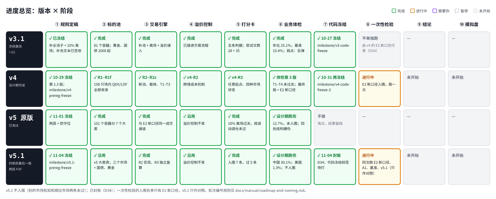
| 页面 | 回答什么 |
|---|---|
| 第二阶段复盘 | 为什么没成立：收益来源拆解、本该更早发现的问题、我的遗漏、哪些能直接修、v6 方向 |
| 一次性检验报告 | 2016–2026 的结论：为什么没通过、设计期优势为什么没延续、结果靠不靠得住、要你定的三件事 |
| v5.1 体检报告 | v5.1 的最终结论：性格、两次急跌、四种行情、任意起点、同行、换个市场、期望线 |
| v5 研究备忘 | v5 为什么这样设计（第 2 节）、设计期结果和任意时点买入（第 3–11 节）、学到什么；原版为什么淘汰 |
| v4 体检报告 | v4 的最终结论：四个改进为什么都没过，E2 新口径的性格 |
| v4 研究备忘 | v4 当初为什么试 T1–T4（留档） |
| 数据看板 | 池子里有什么、每样哪年起能买、数据靠不靠得住 |
02每一版的结论
设计期里“选强势、跑赢现金才买”看起来是对的；到 2016 年以后，入围的 E2 新口径每年少赚 5.7 个点，这条路没有站住。
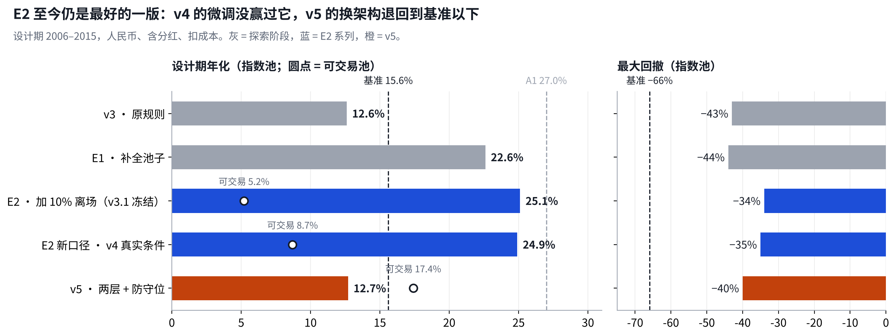
| 版本 | 策略详情 | 设计期年化 | 最大回撤 | 结论 |
|---|---|---|---|---|
| v3 · 原规则 | 一张排名表：看 1、3、6、12 个月，跑赢现金才有资格，按“涨幅 ÷ 波动”取前 N 名（N = 3、5、8），每只 1/N，不够 N 只空位拿现金；周、月各调一次，6 组取平均。池子只用当年已发布的指数 | 12.6% | −43% | 跑输基准 早年能选的只有 4–6 只，牛市拿着现金 |
| E1 · 补全池子 | 规则同上，改一处：池子补全为当年已有数据的指数 | 22.6% | −44% | 变好 病根确认是池子太小 |
| E2 · 加 10% 离场 | 同 E1，再改一处：单只从持有期高点回落 10% 就卖，钱拿现金到下一个调仓日 | 25.1% | −34% | 冻结 v3.1 的最终规则；超额集中在 2006–08 年 |
| v5.1 · 两层 FOF | 三个市场只持最强的一个，仓位两条腿各管一半；28 把尺子按响度加权；单只按自己的前沿或 10% 硬闸门离场；空仓默认国债 | 30.1%可交易 15.8% | −26% | 不入围 美国 ETF 上只有 1.3%：换手每年 43–59 倍，成本吃掉 3–6 个点 |
| v4 · E2 新口径（真实条件） | E2 规则不变，换成真实交易条件：涨跌停、收盘时点和汇率、海外基金溢价；另算“当年真能买到”的可交易池。在它上面试 T1–T4 四个微调 | 24.9%可交易 8.7% | −35% | 一次性检验不通过 2016–2026 年化 3.0%，基准 8.7% |
每一版的摘要（留档，最新的在上）
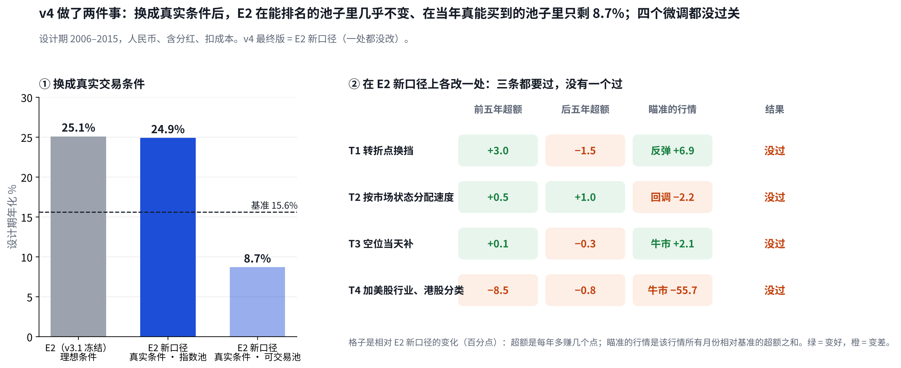
- 第一件事：把回测换成真实交易条件。E2 在能排名的池子里 25.1% → 24.9%，几乎不变；换成当年真能买到的基金，只剩 8.7%，跑输基准。
- 第二件事：在 E2 新口径上各改一处，试四个微调。过关要三条全过：前五年、后五年都更好，瞄准的行情确实变好。四个都没过，所以 v4 最终版就是 E2 新口径，一处没改。
- 留下的问题：池子小的时候“每只 1/N、空位拿现金”代价大，这成了 v5 的出发点。
完整结论见《v4 体检报告》。
E2 的规则（4 步）
- 看 4 种时间长度1/4分别看过去 1、3、6、12 个月（20、60、120、250 个交易日）的表现，每种管 1/4 的钱。
- 先过门槛跑赢现金在这段时间里跑赢现金的，才有资格入选。
- 再挑最强的空位拿现金按“涨幅 ÷ 波动”排名，取前 N 名，每只占 1/N。合格的不够 N 只，空位拿现金。
- 分散着做共 6 组持仓取平均N 取 3、5、8，按周和按月各调一次仓，共 6 组持仓取平均。
当时的体检（已被《v4 体检报告》取代，留档）
3.1病根：能选的太少，牛市里拿着现金
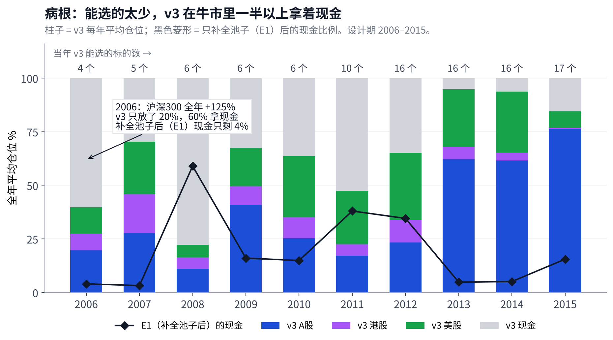
- 左边是 v3 原规则：2011 年以前每年只能选 4–6 只，却要填 3、5、8 个名额，加上“跑不赢现金不能选”的门槛，空出来的名额只能拿现金。
- 右边是 E1 补全池子：每年都能选 17 只，2006–07 年现金只剩 4% 和 3%。
- 2008 年两边都大量拿现金：所有标的都跑不赢现金，门槛在起作用，这正是我们想要的。
发布日这条规则是 Orchestrator 写的，本意是防止指数公司事后挑方法回算。冻结之前没有检查“每年实际能选几个”，这是设计缺陷。以后冻结任何规则之前，先出这张表。
3.2补池子、加离场：从跑输变成跑赢
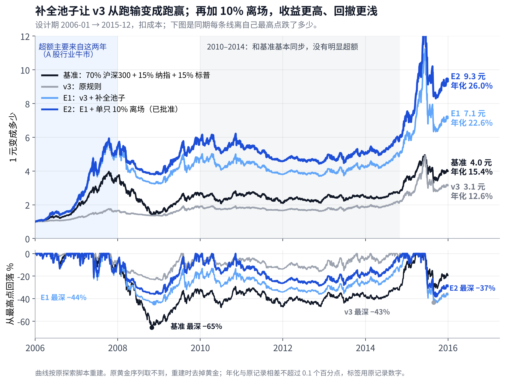
3.3为什么是 10%
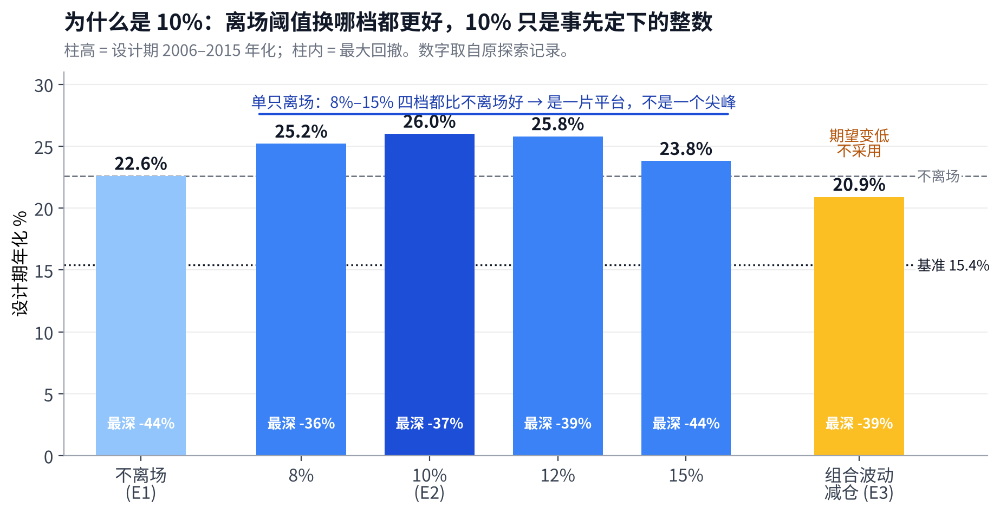
- 为什么有效：强势结束往往很突然。每天检查，跌 10% 就卖，不用等到下一个调仓日。
- 前后两段都成立：2006–10 年，不离场是 1 元变 4.4 元，四档离场都在 5.2–5.4 元；2011–15 年，不离场是 1.6 元，四档都在 1.7 元上下。
E3 看整个组合的波动，波动一高就整体减仓。它对 2015 年那种两三周的急跌有效，对 2008 年持续 10 个月的阴跌没有反应，所以长期收益反而更低。我们追求的是长期收益最大，不是某一段回撤好看。
3.4正式引擎复现了 E2，超额集中在前三年
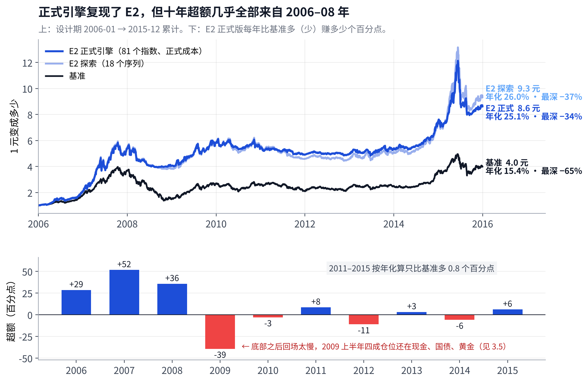
- 复现成立：正式引擎用 81 个指数和正式成本，探索版只用 18 个序列，两条线十年里几乎重合。Reviewer 已独立核对数字。
- 超额从哪来：10 年里有 6 年跑赢，但三个大数 +29、+52、+36 都在 2006–08 年。
- 最大的一次失手：2009 年少赚 39 个百分点，原因见下一节。
3.52009 年的失手：钱回来得太慢
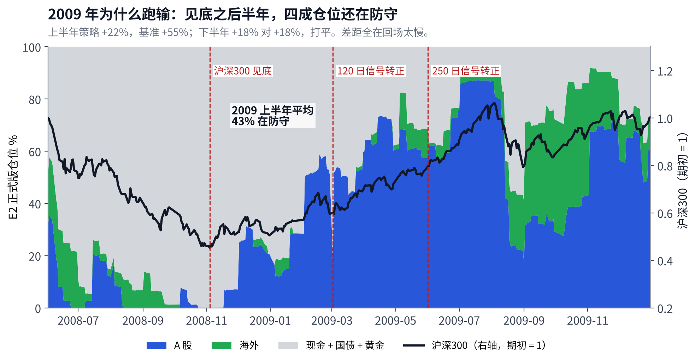
C1 · 快信号回场
| 项目 | 内容 |
|---|---|
| 改的是 | 6 个月和 12 个月那两组的入选门槛 |
| 原规则 | |
| 新规则 | 本组跑赢现金，或者 1 个月和 3 个月都跑赢现金，都可以入选 |
C2 · 门槛看 60 日
| 项目 | 内容 |
|---|---|
| 改的是 | 全部 4 组的入选门槛 |
| 原规则 | |
| 新规则 | 统一看 3 个月（60 日）是否跑赢现金 |
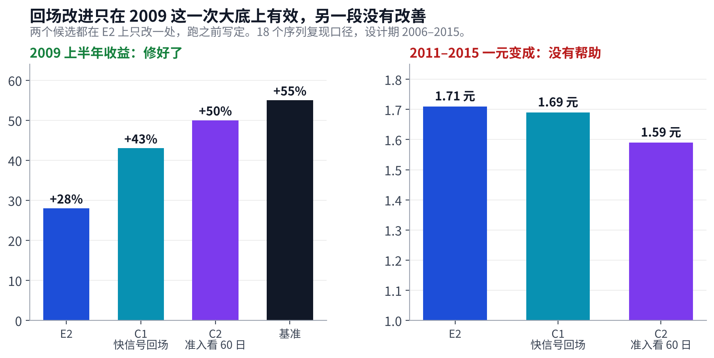
C1 在 2011–15 年和 E2 持平，C2 更差。项目要求规则在前后两段都成立，设计期里只有 2008–09 这一个大底，证据不够，所以都没有采用。C1 作为影子方案，一次性检验时一起报告（D11）。
- 做空不能。这次是涨的时候没跟上，跌的时候已经躲开了；V 形反弹里拿着空头只会亏得更多。
- 防守工具没有问题。2008 年就是现金 ETF 把回撤控制住的，问题在什么时候回来，这是信号问题。
- 唯一对得上的是认购期权：拿现金时买一点认购期权，反弹时能跟上。但 50ETF 期权 2015 年、300ETF 期权 2019 年底才上市，设计期没法检验，而且超出了“只做 ETF、不加杠杆”的边界。
3.6可交易池：同一套规则，只能买当年真有的 ETF
| 指数池（前面所有的数字） | 可交易池 | |
|---|---|---|
| 能选什么 | 用指数的历史数据，假设每个指数当年都能买 | 只能买当年已经上市、并且跟踪同一指数的 ETF |
| 2006–2011 年 | 每年 17–20 个 | 每年 0–1 个（只有红利 ETF） |
| 2015 年 | 22 个 | 14 个 |
| E2 设计期年化 | 25.1% | 5.2%：2013 年以前 88–100% 的时间是现金 |
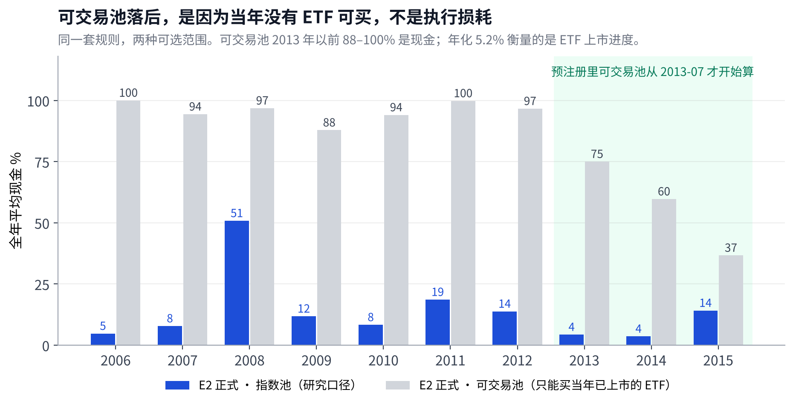
- 所以 5% 说明不了策略的好坏：它衡量的是 ETF 的上市进度。沪深300 ETF 2012 年才上市，行业 ETF 更晚。
- 这和 v4 的“还原真实可投资市场”是同一个问题：当年境内没有对应的 ETF，并不等于投资者买不到。美股可以直接买美国的行业 ETF（v4-R1 已在取数）；A 股在 2006–2011 年也可以通过场外的行业指数基金买到类似的仓位，已定加入 v4 的可交易池（D14-1）。
- 对检验的影响：2016 年以后大部分 ETF 已经上市，可交易池到那时才有意义。预注册写明：可交易池明显不成立，结论降一级。
3.7换两个角度再看：E2 是顺应了市场，还是被市场选中
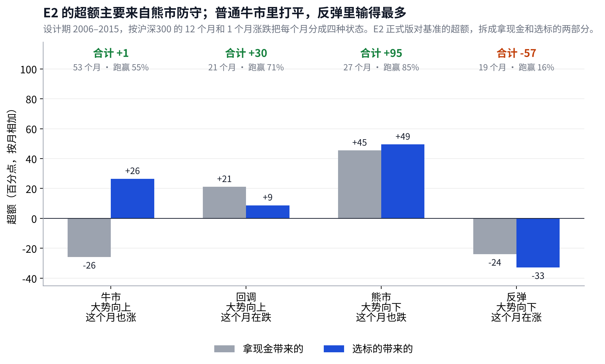
怎么分行情：看沪深300 过去 12 个月和这个月的涨跌。大势涨、本月涨 = 牛市；大势涨、本月跌 = 回调；大势跌、本月跌 = 熊市；大势跌、本月涨 = 反弹。逐年数字、任意起点的两张图见《v4 研究备忘》第 2、3 节。
03已定的大事
研究按事先定的规则收尾：v5 封板，一次性检验只跑一次，结果照实报告。
全部决定记录在仓库 operations/planning/ 下（D11–D33）。
04风险：设计期担心的两条都应验了
“超额集中在 2006–08 年”和“可交易池跑输基准”这两条，在检验段都应验了。
| 风险 | 意味着什么 | 怎么处理 |
|---|---|---|
| 超额集中在设计期前五年已应验 | 2016 年以后每年少 5.7 个点 | →按纪律关闭；复盘写清原因 |
| 能买到的池子已应验 | 不可用：57 只场外基金净值只取到 2015 年底，持仓卡住 | ✓已补齐（63 只）；按你的意思改用场内口径登记重算（D35） |
| 试的次数多 | 累计 115 次 | ✓① 已经不过，不用再打折扣 |
| 2016–2026 不是干净的样本外 | 第一阶段用过这段数据 | →干净证据只来自 2026-10 以后的数据和模拟盘 |
05接下来
- 已完成复盘已写完
- 等你拍板你定了靶子和方向后，按第 9 节改过的流程起草 v6
- 已完成场外净值已补齐（PR #259）
- 待做按 D35 写 LOCK 附录，能买到的池子只用场内基金重算四个策略，只报告不改判
- 持续照常执行（D8），不受这次结论影响
- 排队数据资产 index
- 排队一页期权研究备忘